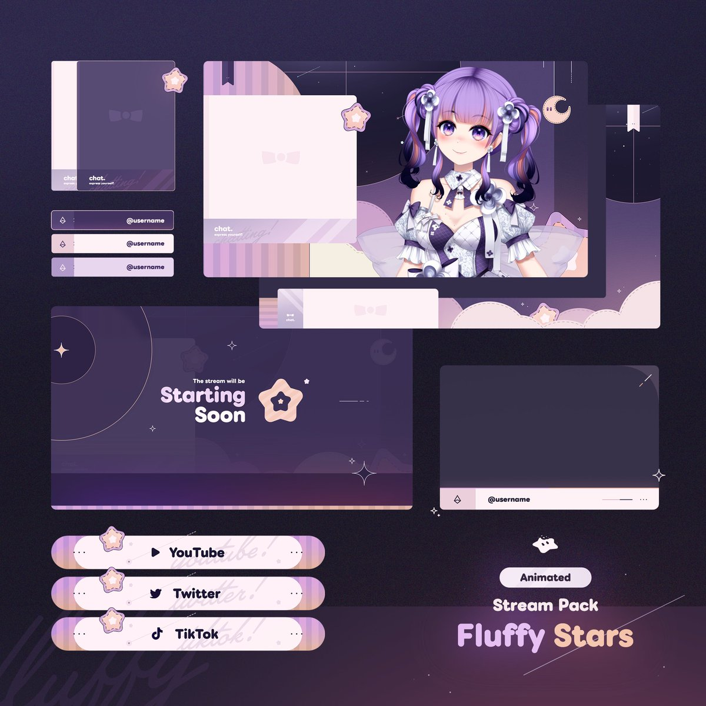

Branding
Swarm Sync
Visual identity & logo/icon for the lava lamp app Swarm Sync, in collaboration with a UI/UX designer and a developer.
A few projects I'm proud of.
Visual identity & logo/icon for the lava lamp app Swarm Sync, in collaboration with a UI/UX designer and a developer.

Full asset pack made for streamers & VTubers, including overlays, panels, and more.

Working since 2022 on various assets for the AI VTubers Neuro-Sama and Evil Neuro — logos, infographics, social media assets, and more.